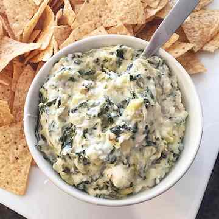

Spinach Artichoke Dip Recipe

Ingredient List:
- 8 oz. cream cheese, well softened
- 1/4 cup sour cream
- 1/4 cup mayonaise
- 1 garlic clove, mincd (1 tsp)
- 2/3 gup finely shredded parmesan cheese
- 1/2 cup finely shredded mozzarella cheese
- 1 (14 oz) can quartered artichoke hearts, can liquid drained, squeeze artichoke to drain excess liquid, chopped
- 6 oz. frozen spinach, thawed, squeezed to drain excess liquid
Instructions:
- Preheat oven to 350 degrees. Spray a small (1 quart) baking dish with non-stick cooking spray.
- In a mixing bowl stir together cream cheese, sour cream, mayonnaise, garlic, parmesan, mozzarella and pepper.
- Stir in artichokes and spinach.
- Spread mixture evenly into prepared baking dish. Bake in preheated oven until heated through and melty, about 20 minutes.
- Enjoy warm with tortilla chips, crackers, bread, or fresh vegtables.